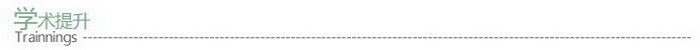

在您的申请材料中拥有更强的软件、硬件资料。
在申请文书中不再是无病呻吟，而是直接地切入实质。
在面试及其与教授的联系中，拥有绝对自信和丰富的申请资料。
最终获得您梦想学校的录取与奖学金。
☆别具特色的个性化学术研究项目。
☆专业化诊断，开发您的潜力，学先于人，领先于人，步步为赢。
☆给予厦大名师推荐信，让您的留学申请表锦上添花，。
☆独到的服务理念：超越学术提升，规划您的精彩人生。
◇第二步：经过科学专业的评估，确定客户自身特质和兴趣爱好。
◇第三步：根据评估情况及其往届成功案例的数据分析，制定集专业性，科学性，新颖性为一体的个性化学术提升项目。
◇第四步：在厦大优秀导师指导下，客户开始学术提升的具体实践活动。
◇第五步：针对客户的项目实践情况，厦大优秀导师作出专业地评定并给予推荐信。
> 学术提升项目(高中生与本科大一生)
学术提升项目是为拥有冲击国外名校潜力的学生所开设的特色研究实践项目。其由南强起点教育咨询有限公司联合厦大优秀教师共同开发设计。通过科学专业的诊断式评估，把握客户的自身特质和兴趣爱好，设计最合适的学术实践方案。其后，客户可在厦大优秀导师的指导下，围绕特定的项目主题，开展系列的研究活动，从而提升客户的实际研究能力，动手实践能力，思维能力，创新能力；可获取厦大优秀导师的推荐信，实现申请竞争力的有效提升；可在实际申请操作阶段有大量可以使用的申请素材，同时为未来的文书写作、面试套磁积累足够深度的素材与资源。> 项目原理
作为一个高中申请者或者本科大一生，你是否觉得三年初中加上三年高中的生活经历，依旧无法成为支撑自己成功完成本科申请名校或者转学去国外名校的力量？那么你现在最需要做的一件事情，毫无疑问就是增加自己的申请竞争力，建立起自己留学申请体系完整的知识构架，让自己成为国外招生办眼中最合适的人选。针对此棘手问题，南强起点特为您推出学术提升项目。我们相信只要在正确的指导下，您的潜力得以培养并通过项目化的手段体现，就能在众多的申请者中脱颖而出，在成绩相近的情况下占据优势，进而能够进入国外顶尖高校。我们承诺通过学术提升培训，您能够面对表格，有文可写，面对考官，有话可说，让一切无懈可击。> 项目目标
在简历中具备有绝对说服力和竞争力的多项独特经历。在您的申请材料中拥有更强的软件、硬件资料。
在申请文书中不再是无病呻吟，而是直接地切入实质。
在面试及其与教授的联系中，拥有绝对自信和丰富的申请资料。
最终获得您梦想学校的录取与奖学金。
> 项目特点
☆VIP小班授课，与厦大名师近距离接触，感受大学研究式教学氛围。☆别具特色的个性化学术研究项目。
☆专业化诊断，开发您的潜力，学先于人，领先于人，步步为赢。
☆给予厦大名师推荐信，让您的留学申请表锦上添花，。
☆独到的服务理念：超越学术提升，规划您的精彩人生。
> 项目流程
◇第一步：免费咨询，了解客户基本情况◇第二步：经过科学专业的评估，确定客户自身特质和兴趣爱好。
◇第三步：根据评估情况及其往届成功案例的数据分析，制定集专业性，科学性，新颖性为一体的个性化学术提升项目。
◇第四步：在厦大优秀导师指导下，客户开始学术提升的具体实践活动。
◇第五步：针对客户的项目实践情况，厦大优秀导师作出专业地评定并给予推荐信。
Copyright© 2009 厦门南强起点教育咨询有限公司.
All right reserved.
闽ICP备07072696号
All right reserved.
闽ICP备07072696号